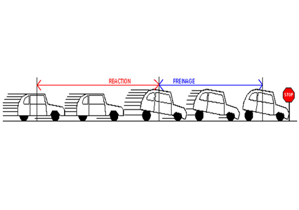
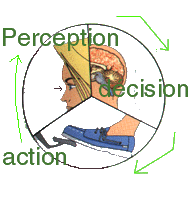
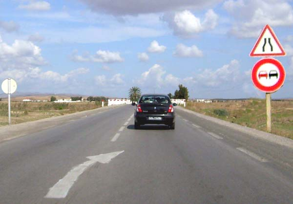

يجب على السائق أن يكون دائما يقظا ومتحكما في سرعة عربته ، كما يجب أن يعدل من سرعته حسب ما تقتضيه إشارات المرور وحالة الطريق والطقس وكثافة الجولان والعوارض المتوقعة : فالامتثال للعلامات المحددة للسرعة واختيار السرعة التي تتناسب مع حالة المعبد من شأنه المساهمة في الوقاية من حوادث الطرقات.
و سوف تتعرف من خلال هذا الباب على كيفية احتساب:
مسافة زمن رد الفعل
مسافة الوقوف
مسافة الأمان
السرعة : السبب الأول للوفيات في حوادث الطرقات
للتحكم في عربتك كما يقتضي ذلك قانون الطرقات من الضروري معرفة كيفية تقدير المسافة اللازمة للوقوف بالعربة في حالة الضرورة القصوى.
ماهي مسافة الوقوف

مسافة الوقوف = المسافة المقطوعة خلال زمن رد الفعل + المسافة المقطوعة بعد كبح الفرامل.
تختلف هذه المسافة حسب سرعة العربة، التحام الأطواق المطاطية بالمعبد، وزمن رد الفعل.
ماهو زمن رد الفعل
زمن رد الفعل هو المدة التي تمتد من بداية معاينة وجود الخطر إلى حين الشروع في الضغط على الفرامل.
=>يمكن أن تتضاعف هذه المدة بسبب التعب أو استهلاك الكحول أو بعض الأدوية وبالتالي ترتبط هذه المدة بالحالة البدنية أو الذهنية للسائق.

يمر زمن رد الفعل بالمراحل التالية
1.الإدراك حيث تتلقى العين المعلومة وترسلها إلى الدماغ
2.القرار حيث يحلل الدماغ هذه المعلومة ويعطي الإذن لرد الفعل
3.رد الفعل بواسطة الضغط على الفرامل
خلال زمن رد الفعل تستمر العربة في السير بنفس السرعة وتقطع مسافة تسمى مسافة رد الفعل و تساوي هذه المسافة تقريبا ثانية عند الشخص الطبيعي و تكون أكثر إذا كان الشخص غير طبيعي (تعب, حالة سكر, تناول أدوية ).
كيف يقع احتساب مسافة زمن رد الفعل
على معبد جاف
يقع احتساب مسافة الوقوف وذلك بقسمة السرعة على 10 وضرب العدد المتحصل عليه في نفسه ( وهذه قاعدة تقريبية).
-بسرعة 60 كم في الساعة
تكون مسافة الوقوف حوالي 60\10 × 6 = 36 متر
-بسرعة 90 كم في الساعة
تكون مسافة الوقوف حوالي 90\10 × 9 = 81 متر
2.على معبد مبلل :
يقع احتساب مسافة الوقوف على معبد جاف مع إضافة نصف هذه المسافة :
بسرعة 60كم في الساعة تكون مسافة الوقوف حوالي :
60\10 × 6) + 18 متر = 54 متر
بسرعة 90 كم في الساعة تكون مسافة الوقوف حوالي ( 90\10 × 9 ) +40 = 120 مترا
إذا كنت في حالة طبيعية و تسير بسرعة 110 كم في الساعة يكون زمن رد الفعل ثانية واحدة
ولكن تصور عدد الأمتار التي تقطعها قبل توقفك أخير !!
مسافة الفرملة
هي المسافة التي تقطعها العربة بعد كبح الفرامل .
تتأثر هذه المسافة خاصة بالعوامل التالية :
-السرعة
-حالة المعبد : أملس أو خشن
-حالة الأطواق المطاطية
-حالة معدات الفرملة
في حالة توفر العربة على نظام ABS
يمكن هذا النظام من تجنب تعطيل دوران العجلات عند الضغط المفاجئ على الفرامل, كما يسمح بالتحكم أكثر في العربة لكن لا يخفض من مسافة الفرملة.
كيفية احتساب مسافة الوقوف
1.على معبد جاف
يقع احتساب مسافة الوقوف وذلك بقسمة السرعة على 10 وضرب العدد المتحصل عليه في نفسه ( قاعدة تقريبية).
-بسرعة 60 كم في الساعة
تكون مسافة الوقوف حوالي 10/60 × 6 = 36 متر
-بسرعة 90 كم في الساعة
تكون مسافة الوقوف حوالي 10/90 × 9 = 81 متر
2.على معبد مبلل :
يقع احتساب مسافة الوقوف على معبد جاف مع إضافة نصف هذه المسافة :
-بسرعة 60كم في الساعة تكون مسافة الوقوف حوالي :
10/60 × 6) + 18 متر = 54 متر
-بسرعة 90 كم في الساعة تكون مسافة الوقوف حوالي ( 10/90 × 9 ) +40 = 121 مترا
إذا كنت في حالة طبيعية و تسير بسرعة 110 كم في الساعة يكون زمن رد الفعل ثانية واحدة
ولكن تصور عدد الأمتار التي تقطعها قبل توقفك أخير !!
مسافة الأمان
مسافة الأمان هي المسافة الكافية الواجب تركها بين عربتك و العربة التي تسير أمامك حتى تتمكن من تفادي الاصطدام بها عند التخفيض الفجئي للسرعة أو الوقوف المفاجئ لهذه الأخيرة.
=>ترتبط هذه المسافة بالسرعة
مسافة الأمان بالنسبة لسائق في حالة عادية تتوفر فيه المؤهلات البد نية والعقلية هي المسافة التي تقطعها العربة في ثانية.
كيف يقع احتسابها ؟
تحسب مسافة الأمان حسب القاعدة التالية :
السرعة (كلم / س)/ 10 X 3 أو بضرب عدد عشرات السرعة X 3
بسرعة 60 كلم/س تكون مسافة الأمان 18 م أي 6 * 3 = 18 متر
بسرعة 90 كلم/س تكون مسافة الأمان 27 م أي 9 * 3 =27 متر
السرعة القصوى (رخصة السياقة صنف ب)
-90 كم في الساعة خارج مواطن العمران
-110 كم في الساعة في الطريق السيارة
بالنسبة للسائق المتربص :
80 كم في الساعة على الطرقات السيارة و خارج مواطن العمران
=>عند تقلص الرؤية بسبب مطر أو ضباب أو غيرها من العوامل الطبيعية، تخفض حدود السرعة ب :
-20 كم في الساعة على الطرقات السيارة وخارج مواطن العمران
-10 كم في الساعة داخل مواطن العمران .
قوة الاصطدام
•بسرعة 60 كم في الساعة تعادل قوة الاصطدام السقوط العمودي من فوق عمارة بخمس طوابق .
•بسرعة 150 كم في الساعة يعادل الاصطدام السقوط العمودي من أعلى بأكثر من 88 متر .
=>وفي حالة الاصطدام بمترجل فإن احتمال وفاته يقدر ب :
-10%عند السير بسرعة 20 كم في الساعة
-30 %عند السير بسرعة 40 كم في الساعة
-و 85% عند السير بسرعة 60 كم في الساعة ويمكن أن يبلغ 100% عند السير بسرعة
80 كلم في الساعة
حالات التخفيض من السرعة
يجب على كل سائق أن يخفض من سرعته بصفة ملحوظة في الحالات التالية :
-إذا كانت ظروف الرؤية غير كافية
-في المنعرجات والمنحدرات الحادة وأجزاء الطريق الضيقة أو المكتظة
-عند الاقتراب من مفترق الطرقات (رغم تمتعي بالأولوية)
-عند الاقتراب من الثكنات ومخارج المعامل
-عند مقاطعة أو مجاوزة مجموعة من المترجلين
-عند مقاطعة أو مجاوزة حيوانات الجر أو الحمل أو الركوب
-عند الاقتراب من عربات النقل العمومي للأشخاص عندما يكون الركاب بصدد الصعود أو النزول
-عند الاقتراب من محطات النقل

تشير هذه العلامة إلى أنه على بعد 150 م تقريبا سوف يتقلص عرض هذا المعبد من الجانبين لذا يجب التخفيض من السرعة و ملازمة الحذر. في حين تمنع العلامة الثانية ( تحت العلامة الأولى) كل عملية مجاوزة .
يجب على كل سائق أن يخفض من سرعته بصفة ملحوظة والوقوف عند الاقتضاء في الحالات التالية :
-إذا كانت الطريق غير شاغرة
-إذا كانت ظروف الرؤية لاتسمح بمواصلة السير خاصة عند وجود ضباب أو أمطار غزيرة
-قرب المدارس.
السرعة تقلص من مجال الرؤيا
يتمتع السائق المتوقف أو الذي يسير بسرعة منخفضة جدا بمجال رؤية يقدر ب 180درجة.
وعند السير بسرعة 100 كم في الساعة يتقلص مجال الرؤيا إلى النصف لأن العقل البشري يستطيع فقط معالجة عدد محدود من المعلومات في نفس الوقت.
في حين كلما ترتفع سرعة العربة كلما يتلقى العقل البشري أكثر قدر من المعلومات لذلك يجد نفسه مضطرا إلى التخلص من العديد من المعطيات الجانبية.
وهكذا فالسائق الذي يسير بسرعة كبيرة يمكن أن لا يرى طفلا يستعد لعبور الطريق أو سائقا آخر يستعد لمغادرة تقاطع طريق.
فإذا التزم كل سائق للمقتضيات المتعلقة بتحديد السرعة، فإن عدد القتلى من حوادث الطرقات سيتقلص من15 إلى 20 %على الأقل : فهل يمكن أن تتصور عدد الأشخاص الذين يمكن أن تنقذهم في حالة الامتثال لهذه القواعد !! .